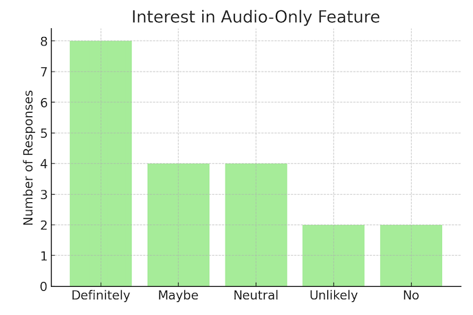
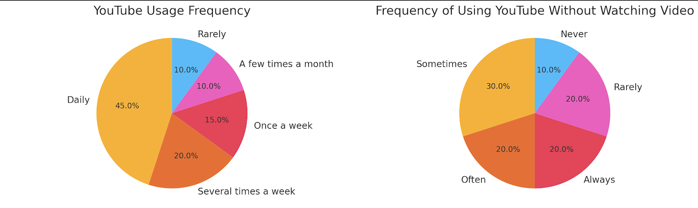
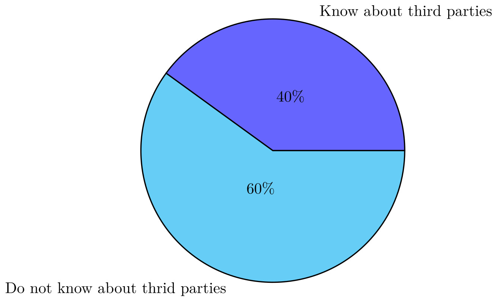
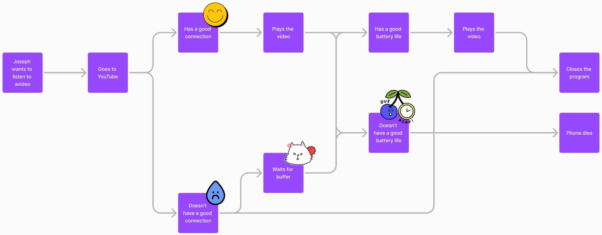

2024F UXR P3
☰
Introduction
Research Findings
Data Analysis
Key Insights
Recommendations
Visualizations & Artifacts
Limitations & Future Considerations
Conclusion
Appendices
Visualizations & Artifacts

Interest in Audio Only Features

Charts for YouTube Usage

Awareness of 3rd Parties

User Journey Map